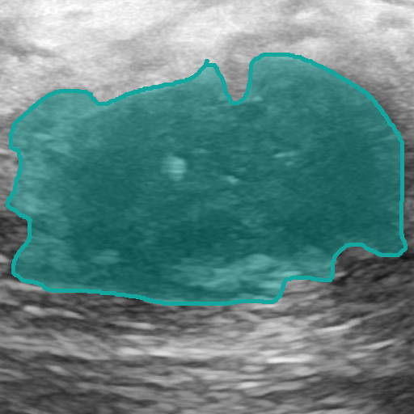
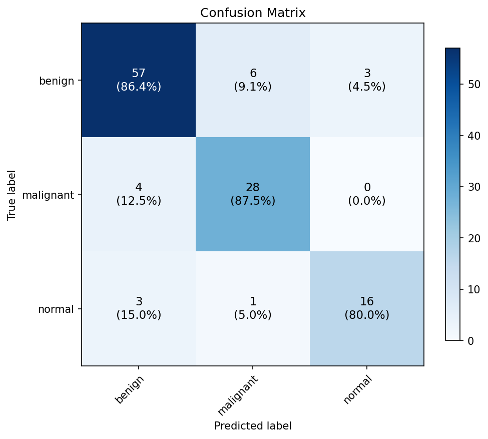
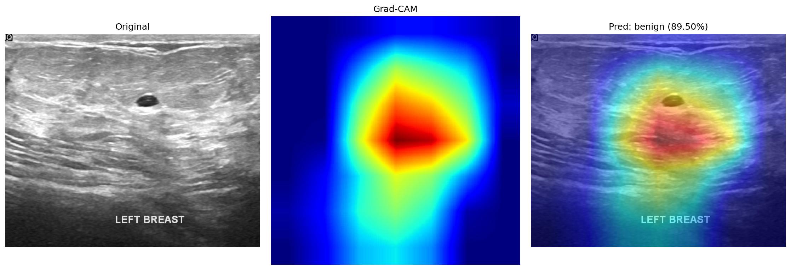
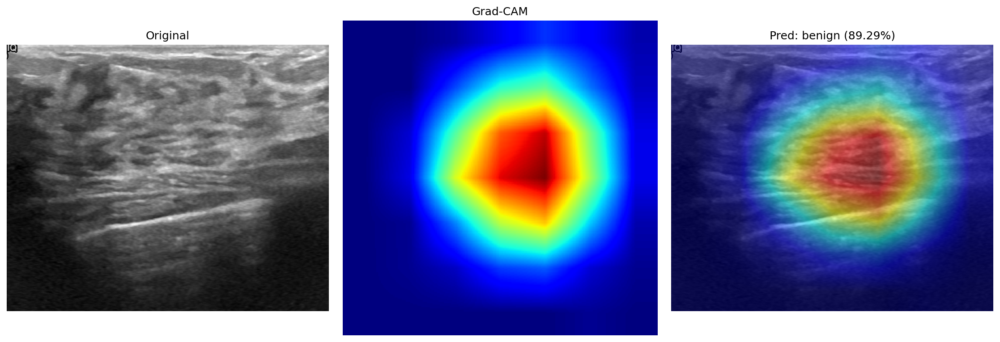
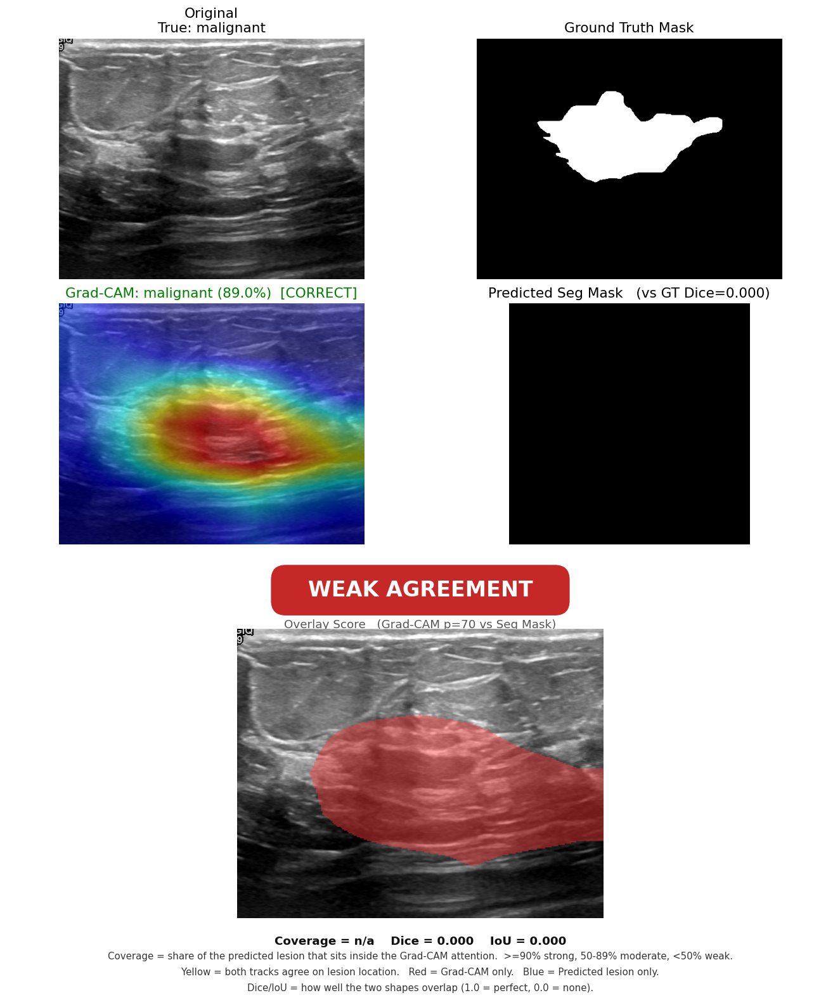
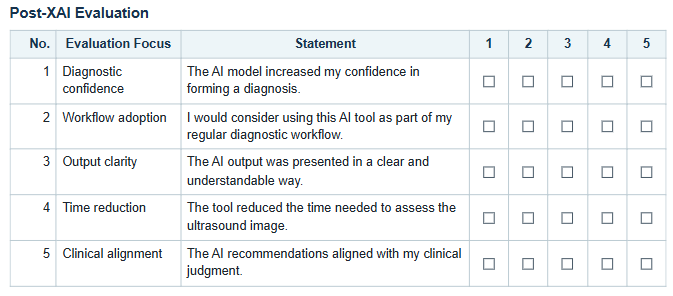

Explainable AI for Breast Cancer Detection
A dual-track, explainable deep learning system for breast imaging: one track answers what the image shows and why, an independent track answers where the lesion is, and a comparison node checks whether the two agree, turning an asserted explanation into a verified one.
Abstract
Deep learning models can match expert radiologists at spotting breast cancer, but a diagnosis that cannot be explained is hard to trust in the clinic. This project builds a dual-track, explainable system for breast imaging: one track answers what the image shows and why, and an independent track answers where the lesion is. A comparison node then checks whether the two tracks point at the same place, turning an asserted explanation into a verified one.
Concretely, a ResNet50 classifier labels each image benign, malignant, or normal and produces a Grad-CAM attention heatmap. A separate U-Net / UNet++ segmentor outlines the lesion. The comparison node thresholds the heatmap into an attention region and measures how much of the predicted lesion mask falls inside it (coverage), collapsing the result into a single Strong / Moderate / Weak agreement badge per case.
On breast ultrasound the classifier reached 86.4% accuracy (0.86 macro-F1) and the optimized segmentor reached Dice 0.779. A clinical review with nine reviewers rated the outputs 3.64/5 on average, above the 3.5 target. This was a four-person European Project Semester project; I led the explainability integration (Grad-CAM and Score-CAM) and the cross-track comparison node, so this write-up focuses there.
Background: detection is not the hard part, trust is
Breast cancer accounts for more than two million new cases every year. The diagnostic path today is resource-intensive, involves invasive and stressful biopsies, and produces long waits for results. Worse, it is not always consistent: on second review, radiologists fully disagree on benign vs. malignant for the same scan in roughly 10-19% of cases, and partially disagree on grade or subtype in another 20-34%.
AI can help. A meta-analysis of over 120,000 patients found that modern models match or outperform expert radiologists at catching cancers. But a black-box prediction is not enough for clinical use: a clinician needs to see why the model decided what it did, and to trust that the explanation is pointing at the actual lesion rather than at an artifact.
Research Questions
- Classification: Can a model reliably tell whether a breast image is benign, malignant, or normal?
- Segmentation: Can we localise the lesion with a pixel-level mask?
- Explainability: Does the model's explanation actually point to the real lesion, and can we verify that?
- Clinical validation: Do medical experts find the outputs interpretable and useful?
Datasets
Two datasets are handled through a single unified layout. US-Arya (breast ultrasound, BUSI-derived) is the primary dataset: it is small, fast to iterate on, has paired lesion masks, and covers three classes. CBIS-DDSM (mammography) is a two-class secondary baseline. Optimization focused on US-Arya because its segmentation masks are reliable enough to anchor the cross-track comparison.
| Dataset | Modality | Train / Val / Test | Classes | Class weights |
|---|---|---|---|---|
| US-Arya | Ultrasound | 544 / 118 / 118 | benign 437, malignant 210, normal 133 | [0.60, 1.24, 1.95] |
| CBIS-DDSM | Mammography | 2010 / 431 / 431 | benign 1595, malignant 1277 | [0.90, 1.13] |
Splits are stratified per class (seed 42). Inverse-frequency class weights feed a weighted cross-entropy loss to counter the imbalance. Preprocessing always applies CLAHE (contrast-limited adaptive histogram equalization) to boost local contrast in ultrasound, followed by ImageNet normalization. Masks are matched to images by naming convention; the normal class gets an all-zero mask.
Methodology: dual-track framework
The system runs two independent tracks that meet at a comparison node:
- Upper track (what / why): a classifier assigns a label, and Grad-CAM extracts a heatmap of the regions that drove the decision.
- Lower track (where): a segmentor independently predicts a binary lesion mask.
- Comparison node: the heatmap is thresholded into an attention region and compared with the mask, producing a single agreement badge.

Input image

Classifier - what

Grad-CAM - why

Segmentor - where

Predicted lesion mask
Transfer learning
Both tracks start from ImageNet-pretrained backbones and are fine-tuned on breast images, so a small medical dataset is enough. The early stages (generic edges and textures) stay frozen; the deeper stages and a fresh head are retrained.
- Classifier: ResNet50. Baseline trains only
layer4+ head; the optimized run also unfreezeslayer3(at LR/10) and adds weight decay, label smoothing, and early stopping. - Segmentor: ResNet34 encoder. Baseline is a plain U-Net; the optimized run switches to UNet++ with a combined BCE + Dice + Tversky loss (Tversky α=0.7, β=0.3 to penalize missed lesion pixels) and stronger, ultrasound-aware augmentation.
Explainability: Grad-CAM, cross-checked with Score-CAM
Grad-CAM was chosen as the primary method because it is designed for CNN image classifiers, produces a
class-discriminative spatial heatmap that can be compared pixel-for-pixel with the lesion mask, and needs no
retraining. It is read from the deepest convolutional block of ResNet50 (layer4[-1]), the last
layer that still keeps spatial layout. The heatmap is then thresholded at the top 30% of pixels (percentile
p=70) into a binary attention region.
LIME was rejected as unstable and patchy, and SHAP as too heavy for dense pixel maps. Score-CAM is kept as an independent, gradient-free second opinion: when it agrees with Grad-CAM, the highlighted region is more credibly what the classifier actually relies on.
Comparison node: coverage over raw overlap
The attention region and the lesion mask are compared two ways. Dice and IoU score how similar the two shapes are, but they unfairly penalize the size mismatch between a broad attention blob and a tight lesion outline. So the decisive measure is coverage: the fraction of the predicted lesion mask that falls inside the attention region. Coverage answers the clinical question directly - is the lesion contained in the area the classifier looked at?
| Situation | Rule | Badge |
|---|---|---|
| Predicted normal, empty mask | both tracks agree: no lesion | Strong |
| Predicted lesion | coverage ≥ 90% | Strong |
| Predicted lesion | coverage 50-90% | Moderate |
| Predicted lesion | coverage < 50%, or classifier flags a lesion the segmentor cannot find | Weak |
Results: classification
On the held-out US-Arya test split the classifier reached 86.4% accuracy and 0.86 macro-F1, clearing the project targets (≥70% accuracy, ≥0.65 F1). Optimization did not raise overall accuracy but trained more stably (best validation F1 0.850 → 0.879) and caught one more malignant case (recall 0.84 → 0.88).

Confusion matrix

Per-class metrics
Per class (precision / recall / F1): benign 0.89 / 0.86 / 0.88, malignant 0.80 / 0.88 / 0.84, normal 0.84 / 0.80 / 0.82. On the harder CBIS-DDSM mammography set the classifier reached 70.8% / 0.70, meeting the minimum bar but overfitting more.
Segmentation
Switching U-Net to UNet++ with the Tversky-weighted loss was the biggest single win: test Dice rose 0.718 → 0.779 and IoU 0.603 → 0.661 (best validation Dice 0.814). This gives the comparison node a reliable outline to check the attention region against.
Grad-CAM by class
Each row is the original ultrasound, the raw heatmap, and the overlay with the predicted label and confidence. On the correctly classified benign and malignant rows the attention sits on the lesion; the misread normal row latches onto background tissue - exactly the failure mode the cross-check is designed to catch.

Benign (correct)

Malignant (correct)

Normal (misread)
Tuning the explanation
Two settings behind the comparison were checked empirically. A threshold sweep showed the best cross-track overlap when keeping the brightest 30% of the heatmap (p=70), and a target-layer ablation confirmed the deepest block gives the sharpest, most lesion-aligned heatmap.
| Heatmap threshold | Dice | IoU | Grad-CAM target layer | Dice | IoU |
|---|---|---|---|---|---|
| p=30 | 0.135 | 0.083 | layer3[-1] | 0.133 | 0.083 |
| p=50 | 0.170 | 0.110 | layer4[-2] | 0.133 | 0.082 |
| p=70 | 0.208 | 0.144 | layer4[-1] (default) | 0.170 | 0.110 |
| p=90 | 0.159 | 0.104 | — | — | — |
Worked cases: Strong, Moderate, Weak
Each panel shows, left to right: the original image, the Grad-CAM overlay (correct/wrong tag), the radiologist ground-truth mask, the predicted mask with its Dice, and the thresholded attention region.

Strong

Moderate

Weak
Score-CAM cross-check
Running the gradient-free Score-CAM produces the same kind of heatmap without using gradients. The two methods agree within one standard deviation, so the findings do not depend on the chosen method.
| Method | Classification accuracy | Mean Dice | Mean IoU |
|---|---|---|---|
| Grad-CAM | 95.2% | 0.170 ± 0.214 | 0.110 ± 0.148 |
| Score-CAM | 85.7% | 0.161 ± 0.210 | 0.104 ± 0.146 |
Clinical Validation
Strong accuracy proves the model works, not that a clinician would trust and use it. To test that, the per-case outputs were packaged into short reports and put in front of nine reviewers - three medical experts (a pathologist, an internist, and a pediatrician) and six students. Five cases were chosen to span all three classes and all three agreement tiers. After each case, reviewers rated five statements on a 1-5 Likert scale.

Post-XAI questionnaire
The overall score was 3.64/5, above the 3.5 target. Clarity (3.84) and time-saving (3.87) rated highest; diagnostic confidence (3.47) and willingness to adopt (3.42) landed just below the bar. Per-reviewer means ranged widely (2.76 to 4.52), so with only nine people this is indicative rather than settled. The lowest-rated dimension - diagnostic trust - maps directly onto what the experts asked for: show patient history, give a calibrated probability, adopt medical terminology, and test on more cases.
Analysis
Why the absolute overlap is small - and why that is fine. The two tracks answer different questions. The heatmap marks a broad region the classifier attended to; the segmentor returns a tight lesion outline. Even when both are correctly aimed at the lesion, a wide blob and a narrow outline cannot overlap perfectly, so raw Dice has a built-in ceiling. This is exactly why coverage (containment), not Dice (shape similarity), drives the agreement badge.
Being right or wrong does not predict spatial agreement. On the full test split, cross-track Dice on correctly classified images (0.195) is essentially identical to misclassified ones (0.186). A wrong label can still come with a correctly placed attention region, and a correct label can come with poor spatial agreement. Location correctness and label correctness are two separate axes - which is the whole point of measuring them independently.
The segmentor is a stable reference. The segmentor reproduces the radiologist masks at mean Dice 0.716 on the full test split (95% CI [0.645, 0.778]). Because it is trained independently and is reliable, when the classifier and segmentor disagree spatially the disagreement is informative about the classifier, not noise.
Challenges
- Small ultrasound dataset (780 images): both tracks overfit at baseline, driving the regularization and augmentation choices.
- Ultrasound speckle noise, addressed with additive Gaussian noise augmentation and CLAHE contrast enhancement.
- Intrinsic attention-vs-mask shape mismatch, which made raw Dice/IoU misleading and motivated the coverage measure.
- Low inter-reviewer consensus (n=9): a headline average can hide a real spread of opinion.
- The mammography set (CBIS-DDSM) segmentation was not reliable enough to anchor the cross-check, so optimization was scoped to ultrasound.
Future Work
- K-fold / multi-split evaluation for more reliable performance estimates than a single 118-image test set.
- Add patient history to both training and the clinical review, as the experts requested.
- Output a calibrated probability rather than a bare label, to address the low diagnostic-confidence rating.
- Adopt medical terminology in the reports and re-run with a revised questionnaire.
- A second, larger expert review round.
- Extend the optimized pipeline and cross-check to CBIS-DDSM mammography.
References
- Selvaraju, R. R., et al. (2017). "Grad-CAM: Visual Explanations from Deep Networks via Gradient-based Localization." ICCV.
- Wang, H., et al. (2020). "Score-CAM: Score-Weighted Visual Explanations for Convolutional Neural Networks." CVPR Workshops.
- Ribeiro, M. T., Singh, S., & Guestrin, C. (2016). "Why Should I Trust You? Explaining the Predictions of Any Classifier." KDD (LIME).
- Lundberg, S. M., & Lee, S.-I. (2017). "A Unified Approach to Interpreting Model Predictions." NeurIPS (SHAP).
- Al-Dhabyani, W., et al. (2020). "Dataset of breast ultrasound images (BUSI)." Data in Brief.
- Lee, R. S., et al. (2017). "A curated mammography dataset for use in computer-aided detection (CBIS-DDSM)." Scientific Data.
- He, K., et al. (2016). "Deep Residual Learning for Image Recognition." CVPR (ResNet).
- Ronneberger, O., Fischer, P., & Brox, T. (2015). "U-Net: Convolutional Networks for Biomedical Image Segmentation." MICCAI.
- Hashim, et al. (2025). Meta-analysis of AI vs. radiologist breast cancer detection (120,000+ patients).